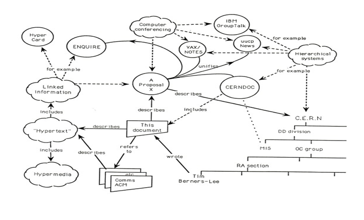

World Wide Web
The World Wide Web is a vast and interconnected system of information accessible through the Internet.
It is a global network of websites, documents, multimedia content, and services that are linked together
via hyperlinks. The web changed the way people access, share, and interact with information, making it a
cornerstone of modern digital communication and knowladge distribution.
Tim berners-Lee, a British scientest, invented the World Wide Web in 1989, while working at CERN. by the end of
1990, Tim Berners-Lee had the first Web server and browser up and running at CERN. The basic idea of the WWW
was to merge the evolving technologies of computers, data networks and hypertext into a powerful and easy to use
global information sysetm.

WWW vs. Internet
While the terms "World Wide Web" and "Internet" are often used interchangeably, it's essential to recognize their
distinctions. The internet is the global infrastructure connecting devices and networks, while the WWW is a collection
of web pages and multimedia content accessible via web browsers.
WWW
Internet
Content formatted in HTML that is accessible through the internet.
Global network enabling devices to transfer with other connected, regardless of their geographical location.
Service provided through the internet.
Global connection of computer networks.
Hyper text transfer protocol.
Transmission Control Protocol/ Internet Protocol.
Web Application Architecture
Client-Side Engineering:
The client-server architecture is a network application that breaks down tasks and workloads between clients and server
that reside on the same system or are linked by a computer network. In this model, all requests and services are delivered
over a network, and it is also referred to as the networking computing model or client server network. Client-server
architecture typically features multiple user's devices connected to a central server via an internet connection or other
network. HTML is used to structure content, CSS defines presentation, and JavaScript adds interactivity.
Server-Side Engineering
Web server-side engineering involves the creation and management of the back end componenets of a website or web application.
This includes designing and implementing the server, databases, and other server-side technologiesq that handle data
processing, storage, and ineractions with clients. The goal is to ernsure smooth functionality, security, and
efficient data management for users accessing the website or application.